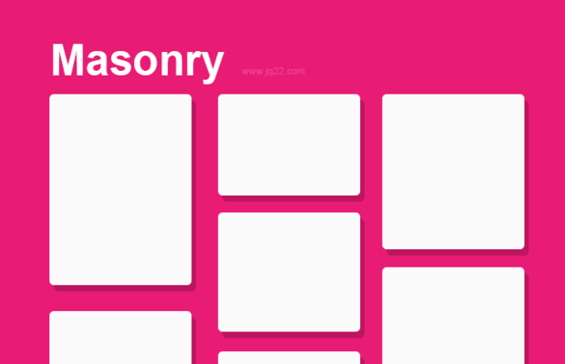

瀑布流

就像我们刷的信息流一样，我们一般在博客的文章显示当中使用瀑布流的方式。这种方式可以让长宽不同的文章（或图片）单元更加合理的排布。
如kvrmnks的博客使用的white-blog，是一个支持瀑布流的一钟博客架构，与普通<div></div><div></div>这样生硬地排布不同，信息块的合理放置可以提升读者阅读体验。
Masonry
配置masonry非常简单，只需要挂上jQuery和Masonry的js文件（引用的时候jQuery在前，否则$().masonry()找不到）
$('document').ready(function () {
let $grid = $('.grid').masonry({
itemSelector: '.item', //上面那个筛选器是所有item上一层的div，这个筛选器是筛选每个item
isAnimated: true, //在横向调整浏览器宽度时，排列会自动调整
columnWidth: 0, //默认每列的宽度单位，为0则以第一个元素的宽度为准
//percentPosition: true 如果item宽度是百分比 则使用本行 否则使用上一行
gutter:0, //两列之间的空隙，如果设置的item的padding则无需额外调整
horizontalOrder: false, //默认是false，true表示让大部分item保持水平的从左到右的顺序，可能使空隙较大
stamp: '.stamp', //一些在平铺时候需要避开的区域，在只会在避开区域的下方平铺（若该列无stamp则从顶开始平铺）
originLeft: false, //默认是true，true表示自左向右排布
originTop: false, //默认是true，true表示自上而下排布
});
});附对应的HTML排布
<head>
<script src="https://cdn.jsdelivr.net/npm/jquery@3.5.1/dist/jquery.slim.min.js"></script>
<script src="https://unpkg.com/masonry-layout@4/dist/masonry.pkgd.min.js"></script>
</head>
<body>
<div class="grid">
<div class="stamp"></div>
<div class="item"></div>
<div class="item"></div>
<div class="item"></div>
...
</div>
</body>实际上，要实现一般人需要的模型，不需要设置那么多项，只需要：
$('document').ready(function () {
let $grid = $('.grid').masonry({
itemSelector: '.item',
isAnimated: true,
gutter:0
});
});除了一开始就布局好以外，Masonry也可以配合点击等事件重新布局：
$('.grid').masonry(‘appended’, $items); //让items加到grid的item之后，并对全部的item重新布局
$('.grid').masonry(‘prepended’, $items); //让items加到grid的item之前，并对全部的item重新布局
$('.grid').masonry(‘stamp’, $stamp); //设置$stamp的stamp标记，排布时会在stamps下方平铺
$('.grid').masonry(‘unstamp’, $stamp); //取消$stamp的stamp标记
$('.grid').on( 'click', '.item', function() { //.item筛选器表示这个on是加给.grid里面面的.item的，而不是加给自己
$('.grid').masonry( 'remove', this ) //通过callback得到要删的item后就可以删除item
.masonry('layout'); //重新排布，否则删除后删掉的地方会空着
});
$('.grid').masonry(‘destroy’); //关闭masonry功能，排布恢复
let elements = $('.grid').masonry('getItemElements'); //获取elements的一个array
Packery
Packery的功能比Masonry要多，与Masonry使用MIT开源协议不同，Packery对于商业是需要使用许可的，对于非商业用途的开发者仍然是免费的。
我感觉对比Masonry，Packery做的最吸引我的其实是它的可拖动模块（Draggable）。
$('document').ready(function () {
let $grid = $('.grid').packery({
itemSelector: '.item',
isAnimated: true,
});
$grid.find('.item').each(function(i, gridItem) {
let draggie = new Draggabilly(gridItem); //设置可拖动单元
$grid.packery('bindDraggabillyEvents', draggie); //绑定
});
});其中需要的依赖js包有jQuery、Packery、Draggablly，引用源可以参考
<script src="https://unpkg.com/masonry-layout@4/dist/masonry.pkgd.min.js"></script>
<script src="https://unpkg.com/packery@2/dist/packery.pkgd.min.js"></script>
<script src="https://unpkg.com/draggabilly@2/dist/draggabilly.pkgd.min.js"></script>Infinity Scroll
这是一个可以将下一页内容加载到自己页下方的插件，配合上面的Packery或者Masonry非常方便。同样，这也是一个商业用途收费的插件。
$('.grid').infiniteScroll({
path: '.page_next', //这是存放下一页地址的a标签
append: '.item', //从下一页里找到内容块
status: '.page-load-status', //表示加载状态的一个div，包括加载中、最后一页、加载失败等
hideNav: '.page', //隐藏导航栏（当前页码上一页下一页等）
});对应的HTML架构：
<div class="grid">
<article class="item">...</article>
<article class="item">...</article>
...
</div>
<div class="page-load-status">
<p class="infinite-scroll-request">Loading...</p>
<p class="infinite-scroll-last">End of content</p>
<p class="infinite-scroll-error">No more pages to load</p>
</div>
<div class="page">
<span class="page_current">Page 1</span>
<a class="page_next" href="/page/2">Next</a>
</div>